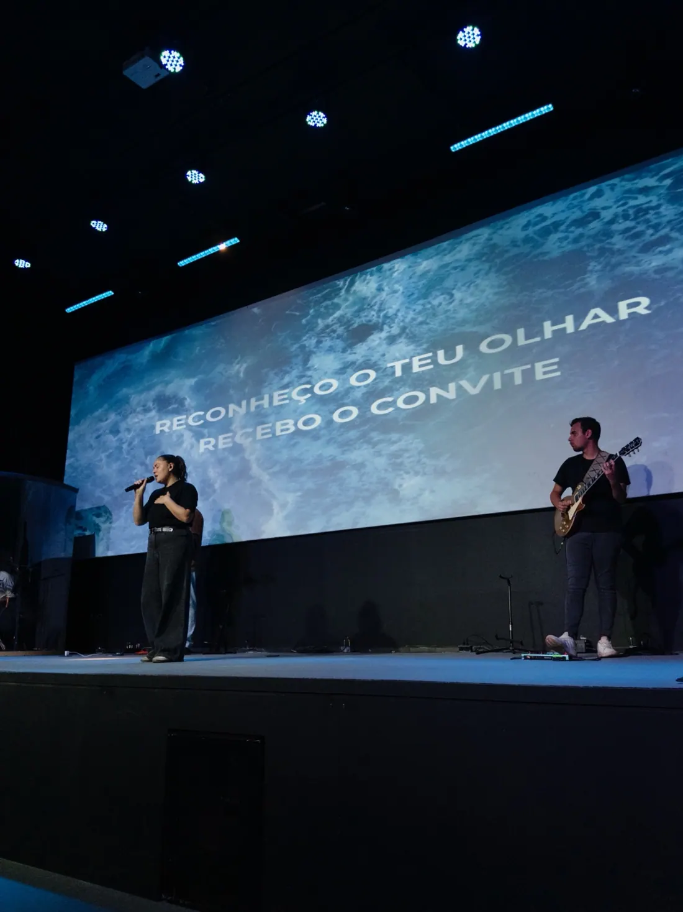
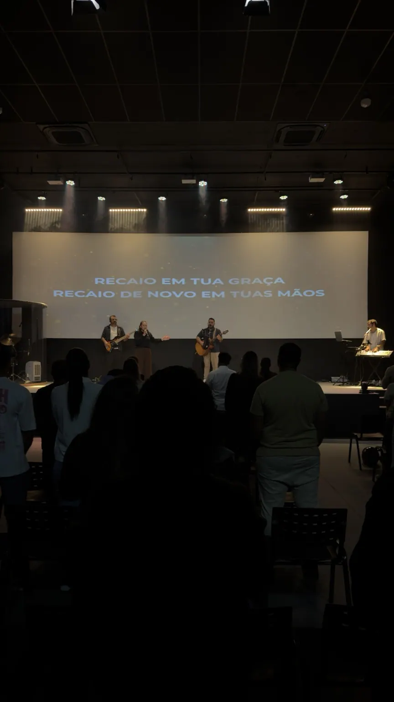
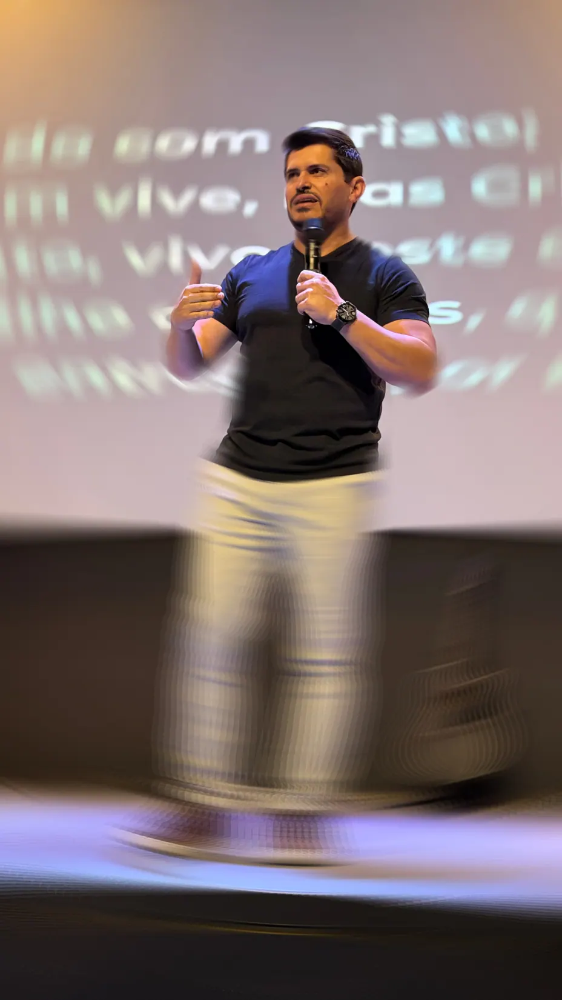
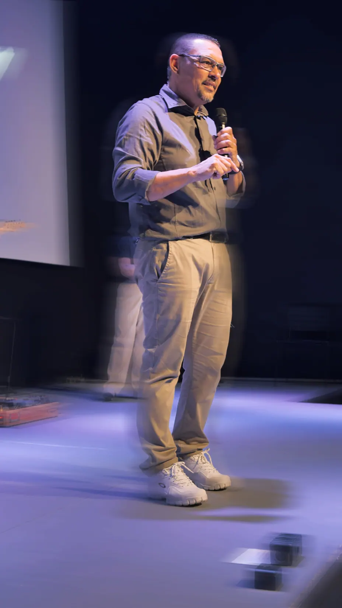

DESLIZE PARA DESCOBRIR ↓
ANTES DE QUALQUER COISA
Você não foi
esquecido.
Talvez os dias tenham sido corridos. Talvez a vida tenha levado você por outros caminhos. Tudo bem. Este convite é um lembrete.
LUCAS 15:20–24 · INSPIRAÇÃO
A porta continua
aberta.
Na parábola, o pai corre ao encontro do filho. O amor vem primeiro.
Um lugar para você.


Não precisa ter todas as respostas. Você pode simplesmente chegar.


UMA PALAVRA PARA VOCÊ
Alguém quer
falar com você.
E É POR ISSO QUE ESTAMOS AQUI
Existe um lugar preparado para você.
VOCÊ É NOSSO CONVIDADO PARA O
BLACK VIDEIRA
12.12
QUANDO
HORÁRIO
ONDE
Alguém pensou em você ao enviar este convite. ♡